用 anki-flashcard-medical-exam skill 把考選部考古題（PDF / RTF / Markdown / TXT / DOCX 全格式支援）自動產生成可背的 Anki flashcard。
這份說明書寫給從來沒用過 Obsidian / Anki / Claude 的同學，從零開始一步一步教。
📊 這份 skill 能做到什麼？以我們真實處理「醫學六」為例：
2026-05-25 一個下午內，把 9 份醫學六考古題（111-1 ~ 115-1）一口氣做完，全部產出可同步到 Anki 的 .md 檔。
👆 重點：你只要把考古題檔（PDF 或任一支援格式）拖進去、回答幾個問題、改一下 Obsidian to Anki 的 Scan Directory 設定，剩下都是 Claude 在跑。Claude 跑題的時間 = 你可以拿來真的讀書、優化筆記系統、做更有產值的事的時間。
📑 目錄
/anki-flashcard-medical-exam傳統用 Anki：要改題目就得在 Anki 視窗內一張一張點開來改，沒有版本控制、不能批次處理、不能用 Claude 幫忙批次改。
用這個流程：你的「題庫真相」是 Obsidian 內的 .md 純文字檔。這代表：
Claude 在生卡片時會做一件 Anki 完全沒有的事——把題目中文敘述（像「心肌梗塞」、「高血鉀」、「呼吸困難」）自動轉成英文專有名詞，再包成 [[wikilink]]。
[[xxx]] 就是一個「原子筆記」種子
[[myocardial infarction]] → 在 Obsidian 內變成可點 linkmyocardial infarction.md，這就是一個新的概念筆記醫學六 9 份共 720 題，產出約 3500 個 wikilink（平均每題 ~5 個），跨 6 科自動串聯。
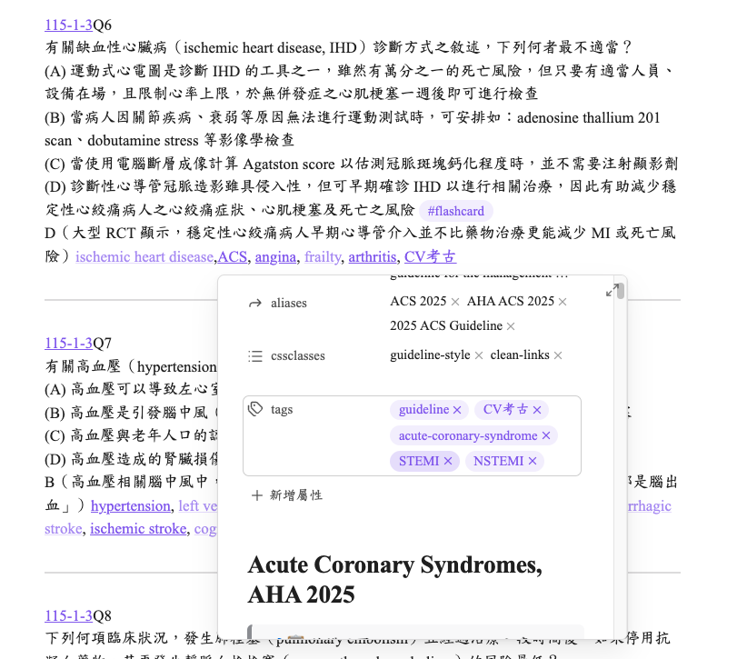
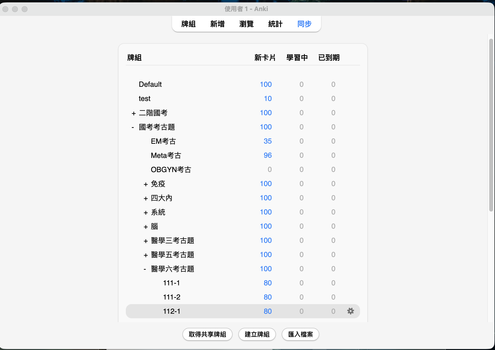
📺 影片連結：https://youtu.be/S0fDdArNtRo
影片裡會教你：
2055492159）+ webCors 白名單設定 + 重啟影片教到下面三個設定時，你會需要這些 code。先存著，到時候 copy-paste 即可（不用自己手打）。
到 Anki → 工具 / Tools → 附加元件 / Add-ons → 選 AnkiConnect → 右側按 設定 / Config。把整個 JSON 內容覆蓋成下面這份（重點是 "webCorsOriginList" 內要有 "app://obsidian.md"）：
{
"apiKey": null,
"apiLogPath": null,
"ignoreOriginList": [],
"webBindAddress": "127.0.0.1",
"webBindPort": 8765,
"webCorsOriginList": [
"http://localhost",
"app://obsidian.md"
]
}按 確定 / OK 後，🔄 完全結束 Anki 再重開（Mac 上 ⌘Q，不要只關視窗）。
讓 #flashcard 與 #clozecard 兩種 tag 都能正確觸發 Anki 卡片：
((?:[^\n][\n]?)+) #clozecard ?\n*((?: \n(?:^.{1,3}$|^.{4}(?<!<!--).*))+)((?:[^\n][\n]?)+) #flashcard ?\n*((?: \n(?:^.{1,3}$|^.{4}(?<!<!--).*))+)到 Anki → 工具 / Tools → 管理筆記類型 / Manage Note Types → 選 Basic 或對應 note type → 卡片 / Cards → 編輯「背面範本」貼上：
{{FrontSide}}
<hr id=answer>
{{背面}}
<br><br><br>
<div style='font-size: 12px;'>{{Obsidian Link}}{{Obsidian Context}}</div>Front（卡片正面）背面（答案內容）Obsidian Link（plugin 自動寫入 source link）Obsidian Context（plugin 自動寫入 file path / heading 路徑）
在你的 Obsidian vault 內建立以下資料夾（左側 file explorer 右鍵 → New folder）。只需建到「醫學三/四/五/六」這層空資料夾即可，每份考古題的子資料夾（如 115-1-6/）+ .md 檔，全部由 Claude 自動建立。
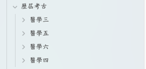
Skill 跑完後會自動長出每份考卷的子資料夾與 .md：
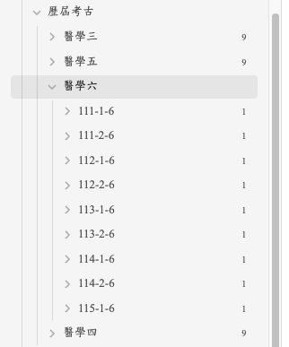
考古/歷屆考古/醫學X 為例。
影片裡只教 plugin 安裝，但 plugin 內幾個關鍵設定一定要客製化，否則：(1) sync 會卡住、(2) 卡片進錯 deck、(3) 在 Anki 內看到卡片時無法跳回 Obsidian source。
到 設定 / Settings → 左欄滾到下方點 Obsidian to Anki。以下設定全部都在這頁。
到設定頁的 Defaults 區段，找 「Scan Directory」（欄位下方說明：The directory to scan. Leave empty to scan the entire vault）。
考古/歷屆考古/醫學六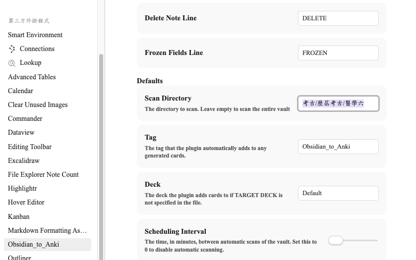
這個就是讓「Obsidian 資料夾 ↔ Anki Deck」對應的核心設定。建議「每份考卷 = 一個 Anki 子 deck」，這樣在 Anki 內可以針對某次考古題單獨複習。
用 :: 在 Anki 內建立階層 deck（Anki 的標準語法）：
國考考古題
└── 醫學六考古題
├── 115-1
├── 114-2
├── 114-1
└── 113-2 ...國考考古題::醫學六考古題::115-1（用 :: 分層）考古/歷屆考古/醫學六/115-1-6國考考古題::醫學六考古題::115-1| Obsidian 資料夾路徑（左） | Anki Deck 完整路徑（右） |
|---|---|
考古/歷屆考古/醫學六/115-1-6 | 國考考古題::醫學六考古題::115-1 |
考古/歷屆考古/醫學六/114-2-6 | 國考考古題::醫學六考古題::114-2 |
考古/歷屆考古/醫學六/114-1-6 | 國考考古題::醫學六考古題::114-1 |
考古/歷屆考古/醫學六/113-2-6 | 國考考古題::醫學六考古題::113-2 |
| … 依此類推到 111-1-6 / 111-1 | |
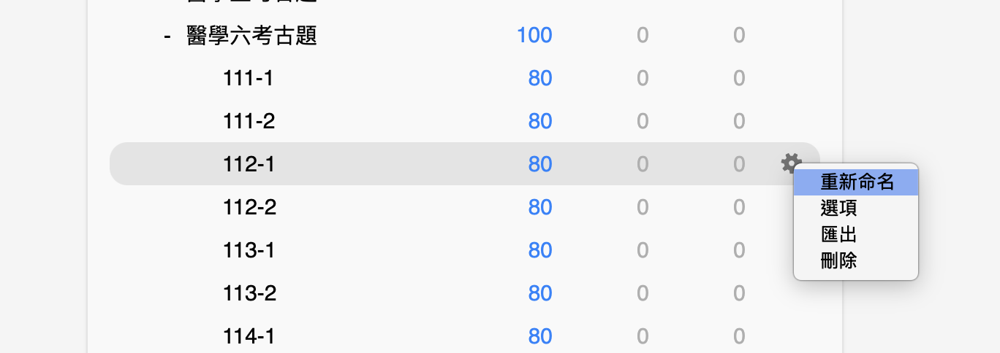
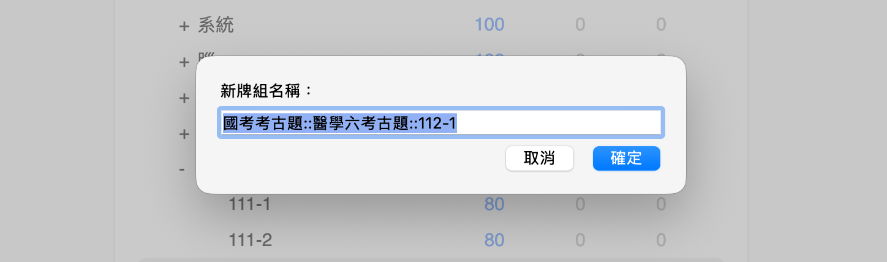
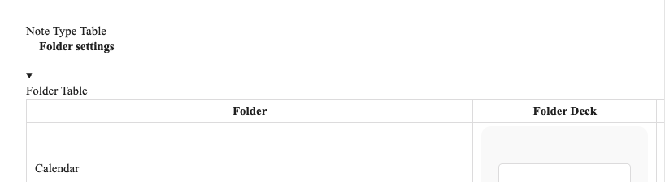
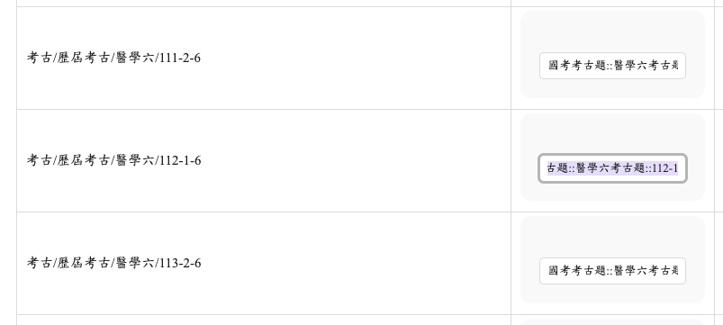
以下實況是 2026-05-25 處理 9 份醫學六考古題（111-1-6 到 115-1-6）的完整對話過程。每一步你都可以照抄。
到考選部歷屆試題頁面下載對應科目的 PDF 試題。
檔名建議維持 114-2-6.pdf 這種格式（年份-次數-科目編號）方便辨識。
科目編號：3 = 醫學三、4 = 醫學四、5 = 醫學五、6 = 醫學六。
怎麼把檔案給 Claude（按方便程度排序）：
把下載的 PDF（或 RTF / DOCX / MD）直接拖進 Cowork 對話框 → 下指令。Skill 內建多格式 parser，會依副檔名自動選對的解析方式（PDF 走 pdfplumber、RTF 走 striprtf、DOCX 走 python-docx、MD/TXT 直接讀）。
如果檔案已經放在 vault 內，不用拖，直接告訴 Claude 路徑就好。Claude 也會主動問你「輸入檔案的完整路徑」與「輸出資料夾的完整路徑」（Step 0 必問）。
以前 skill 只支援 RTF 時，PDF 必須先外部轉檔。現在 skill 內建 PDF parser，這條路徑用不到。但如果你要一次塞 20+ 份大型 PDF，可以考慮先用 pdf2md.morethan.io 把 PDF 轉成 markdown 存進 vault，再給 Claude 路徑——可以省一些 PDF parsing 的 token。日常用直接拖 PDF 就行。
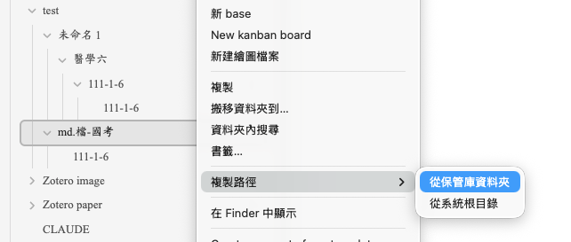
在 Claude desktop app 開啟 Cowork mode。不用先做複雜設定——把考古題拖進對話框、下指令就好，Claude 跑到需要寫檔時自己會跳出來請求 vault 權限，你按「允許」即可。
/anki-flashcard-medical-exam / 要跟我要 OB 權限」一樣——加一句「要跟我要 OB 權限」就會讓 Claude 早期確認權限，避免做到一半才卡住。如果 Claude 跑到一半說「找不到 vault」，直接回「給你權限」，Claude 就會自己跳出存取請求視窗讓你授權。
把所有要做的考古題檔（PDF / RTF / Markdown / TXT / DOCX 都可以，可混用）一次拖進 Cowork 對話框（醫學六的話就是 9 份），然後輸入：
「要跟我要 OB 權限」這句是提醒 Claude 「等下需要存到 Obsidian vault，記得先問我要不要授權」。
skill 設計上會問三件事，依你的需求選擇即可：
選 「9 份全部依序做完」（從舊到新做完最完整）。
選 「一次 80 題」（最快，反正都是 Claude 在生）。
選 「先掃一份再列科別清單給我看」。Claude 會掃描其中一份題目，列出科別範圍給你確認。
以醫學六為例，掃完 115-1-6 後 Claude 會列出：
| 科別 | 題號範圍 | 題數 |
|---|---|---|
| 麻醉科 | Q1–9 | 9 |
| 眼科 | Q10–20 | 11 |
| 耳鼻喉科 | Q21–27 | 7 |
| 婦產科 | Q28–57 | 30 |
| 復健科 | Q58–71 | 14 |
| 醫學倫理 | Q78–80 | 3 |
然後 Claude 會問你「這些科別 tag 要怎麼命名？」每個科目逐一選定：
| 科別 | 我們這次選的 tag |
|---|---|
| 麻醉科 | [[Anes考古]] |
| 眼科 | [[Ophth考古]] |
| 耳鼻喉科 | [[ENT考古]] |
| 婦產科 | [[OBGYN考古]] |
| 復健科 | [[Rehab考古]] |
| 醫學倫理 | [[Ethics考古]] |
Claude 會依序：
pdfplumber（必要時 fallback 到 PyMuPDF）、RTF 用 striprtf、DOCX 用 python-docx、Markdown/TXT 直接讀。所有格式都會先轉成純文字 .txt 再給 Claude 讀，避免大檔爆掉 token考古/歷屆考古/醫學六/<代號>/<代號>.md9 份做完會看到類似這樣的總結：
111-1-6: 題數=80 flashcard=80 分隔=79 圖片題=7
111-2-6: 題數=80 flashcard=80 分隔=79 圖片題=3
112-1-6: 題數=80 flashcard=80 分隔=79 圖片題=4
...（共 9 份）打開 Obsidian 看左側檔案瀏覽器，應該長這樣：
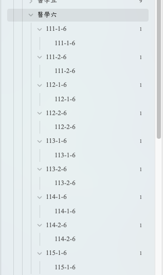
隨便打開其中一份 .md（例如 115-1-6.md）確認題目內容已生成：
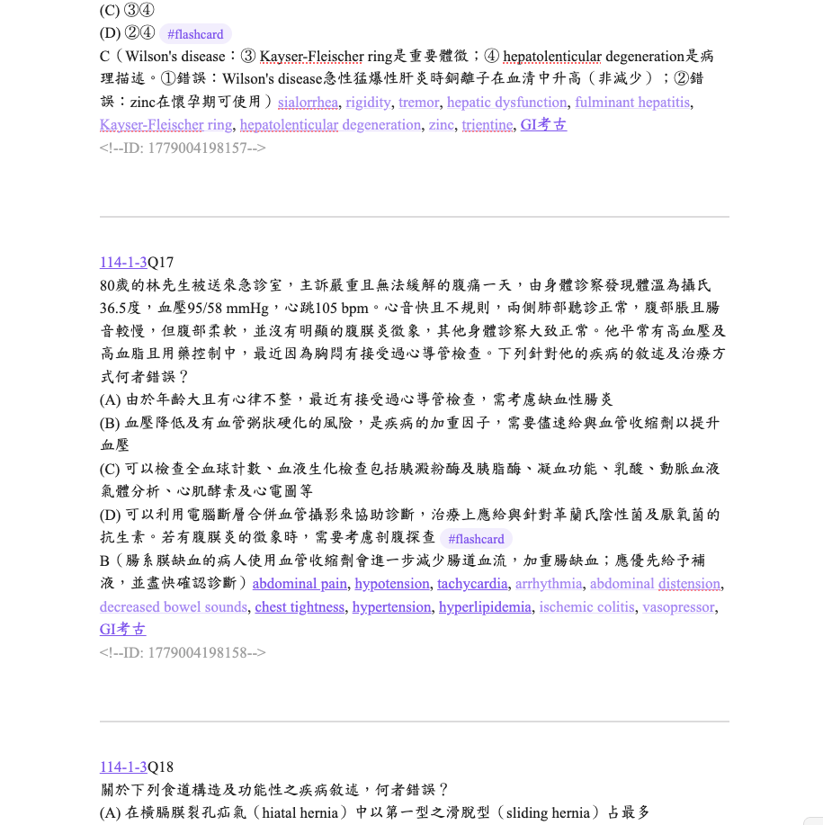
切到 Anki 主程式，確認它是開著的（不開 = AnkiConnect 沒在跑 = sync 會失敗）。
打開 Obsidian → 設定 / Settings → Obsidian to Anki → 確認 Scan Directory 是 考古/歷屆考古/醫學六。一般可以留空（plugin 會掃整個 vault），如果 sync 太慢才設定。
Obsidian 左側 sidebar 有 Obsidian to Anki plugin 的按鈕（滑鼠移過去會跳 tooltip「Obsidian_to_Anki - Scan Vault」），直接點它就會開始 sync。
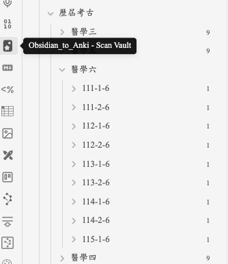
obsidian to anki → 選 Scan Vault。
同步中右下角會跳一連串通知，看到下面這幾條就成功了：
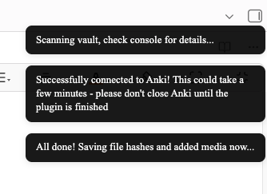
720 題大約需要 20-60 秒（依電腦速度）。
隨便打開一份 .md（例如 115-1-6.md），會看到每題下方多了一行：
... 答案行 ...
<!--ID: 1779693822318-->切到 Anki 主畫面，會看到「國考考古題::醫學六考古題」這個科目下的 9 個子 deck 各出現 80 張新卡（共 720 張）（藍色標示「New / 新卡片」）。
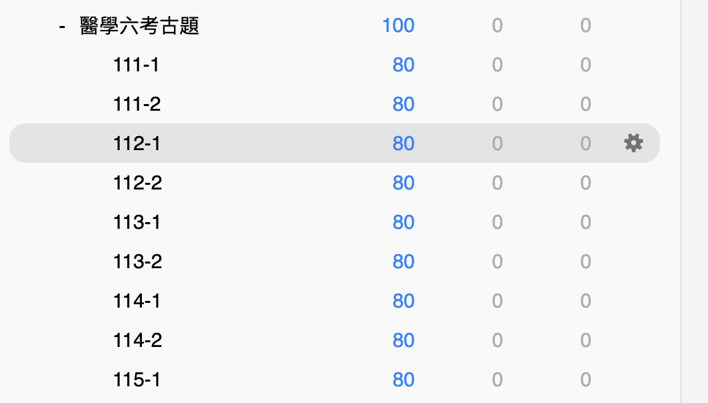
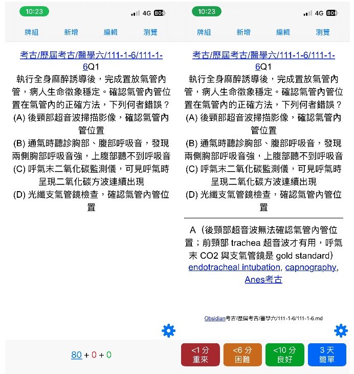
如果你建過 AnkiWeb 帳號，可以：
Claude 會依 tag scan checklist 逐字重掃該題的題目 + 4 選項，輸出更正版整題。你直接 copy 回 .md，下次 sync 會自動 update Anki 卡片（不會新增重複卡，因為 ID 註解還在）。
Scan Vault，Anki 才會看到更新。
檢查：Anki 主程式必須開著。
原因：Scan Directory 設成空白，plugin 試圖掃整個 vault。
解法：
考古/歷屆考古/醫學六）兩個常見原因，依優先順序檢查：
原因 1：Scan Directory 範圍太大或設錯 → 跟上一條同樣解法，縮小 Scan Directory 範圍。
原因 2：⚠️ 格式錯誤（很容易發生，之前搞到頭很痛的就是這個）。Obsidian to Anki plugin 的 regex 對格式超敏感，少一個空格、多一個換行就辨識不到。如果改過 .md 後該題沒長 ID，多半是這個原因。
[[年份-次數-X]]Q題號
題目原文
(A) 選項 A
(B) 選項 B
(C) 選項 C
(D) 選項 D #flashcard␣
答案（解釋）[[tag1]], [[tag2]], [[科別考古]]
---
[[年份-次數-X]]Q下一題
...🔴 必要規則（plugin 真認的，違反 = sync 失敗）
#flashcard 前後都要有半形空格，後面一個空格再換行（從 Custom Regexp 拆解出來： #flashcard ?\n）#flashcard 那行下面緊接答案內容（不能空行、不能立刻 ---、不能立刻下一題）<!--ID:--> 開頭（plugin 同步後會自己加在最後，別手動刪或移位）🟡 強烈建議（避免奇怪 bug）
--- 分隔，前後各空一行| 類別 | 範例 |
|---|---|
| 疾病名稱 | [[myocardial infarction]]、[[rheumatic mitral stenosis]] |
| 症狀與臨床事件 | [[fever]]、[[syncope]]，HR 130 自動推 [[tachycardia]] |
| 體徵與理學檢查 | [[clubbing]]、[[pulsus paradoxus]]、[[bronchial sound]] |
| 藥物 | [[ACEi]]、[[ARB]]、[[beta-blocker]]（同選項多種藥物全標） |
| 病原體 | [[Shigella]]、[[Pseudomonas aeruginosa]] |
| 檢驗異常狀態 | [[hyperkalemia]]、[[metabolic acidosis]] |
| 科別 | Tag | 科別 | Tag |
|---|---|---|---|
| 心臟科 | [[CV考古]] | 麻醉科 | [[Anes考古]] |
| 腸胃科 | [[GI考古]] | 眼科 | [[Ophth考古]] |
| 腎臟科 | [[Nephro考古]] | 耳鼻喉科 | [[ENT考古]] |
| 內分泌 | [[Meta考古]] | 婦產科 | [[OBGYN考古]] |
| 胸腔科 | [[CM考古]] | 復健科 | [[Rehab考古]] |
| 血液腫瘤 | [[Hema考古]] | 感染科 | [[Inf考古]] |
| 風濕免疫 | [[AIR考古]] | 神經科 | [[Neuro考古]] |
| 精神科 | [[Psy考古]] | 小兒科 | [[Ped考古]] |
| 皮膚科 | [[Derma考古]] | 家醫科 | [[FM考古]] |
| 急診 | [[EM考古]] | 醫學倫理 | [[Ethics考古]] |
同一題可以掛多個科別 tag（例如兒童心臟病 → [[Ped考古]], [[CV考古]]；周產期心肌病變 → [[OBGYN考古]], [[CV考古]]）。